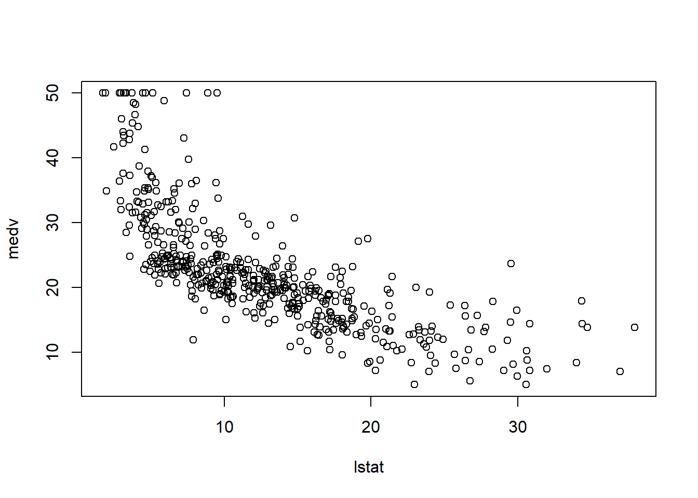
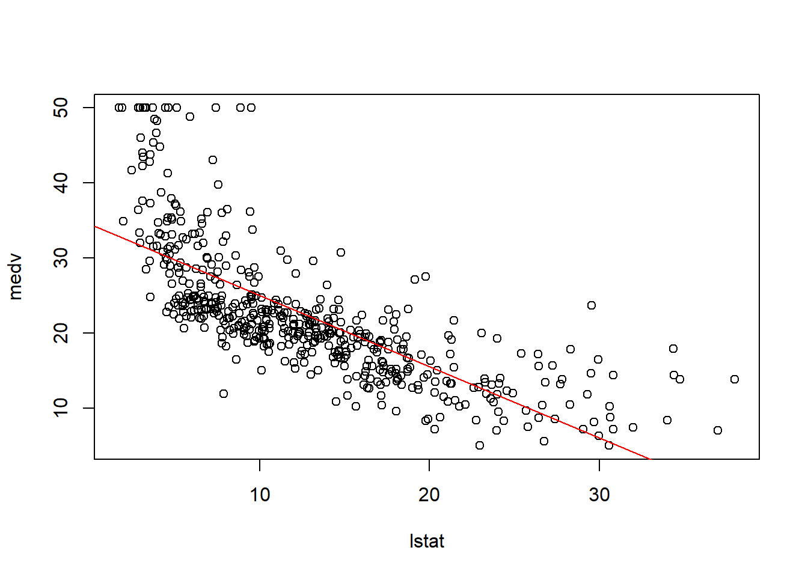
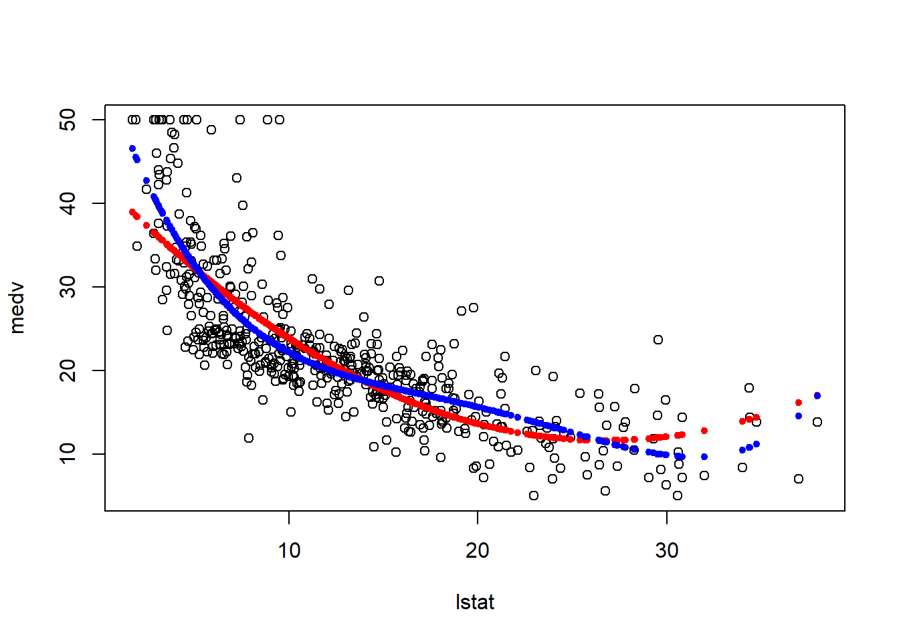
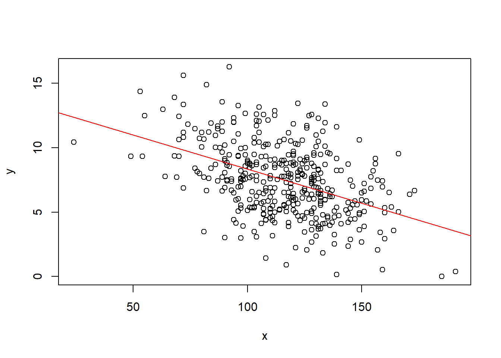
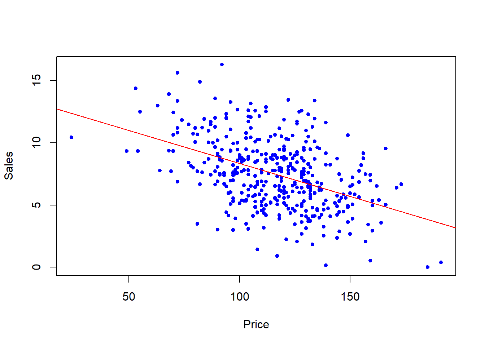

ISLR 3: Linear Regression
Load the following packages.
library(MASS)
library(ISLR)Simple linear regression
Check out the Boston data
?Bostonnames(Boston)## [1] "crim" "zn" "indus" "chas" "nox" "rm" "age"
## [8] "dis" "rad" "tax" "ptratio" "black" "lstat" "medv"class(Boston)## [1] "data.frame"dim(Boston)## [1] 506 14summary(Boston)## crim zn indus chas
## Min. : 0.00632 Min. : 0.00 Min. : 0.46 Min. :0.00000
## 1st Qu.: 0.08204 1st Qu.: 0.00 1st Qu.: 5.19 1st Qu.:0.00000
## Median : 0.25651 Median : 0.00 Median : 9.69 Median :0.00000
## Mean : 3.61352 Mean : 11.36 Mean :11.14 Mean :0.06917
## 3rd Qu.: 3.67708 3rd Qu.: 12.50 3rd Qu.:18.10 3rd Qu.:0.00000
## Max. :88.97620 Max. :100.00 Max. :27.74 Max. :1.00000
## nox rm age dis
## Min. :0.3850 Min. :3.561 Min. : 2.90 Min. : 1.130
## 1st Qu.:0.4490 1st Qu.:5.886 1st Qu.: 45.02 1st Qu.: 2.100
## Median :0.5380 Median :6.208 Median : 77.50 Median : 3.207
## Mean :0.5547 Mean :6.285 Mean : 68.57 Mean : 3.795
## 3rd Qu.:0.6240 3rd Qu.:6.623 3rd Qu.: 94.08 3rd Qu.: 5.188
## Max. :0.8710 Max. :8.780 Max. :100.00 Max. :12.127
## rad tax ptratio black
## Min. : 1.000 Min. :187.0 Min. :12.60 Min. : 0.32
## 1st Qu.: 4.000 1st Qu.:279.0 1st Qu.:17.40 1st Qu.:375.38
## Median : 5.000 Median :330.0 Median :19.05 Median :391.44
## Mean : 9.549 Mean :408.2 Mean :18.46 Mean :356.67
## 3rd Qu.:24.000 3rd Qu.:666.0 3rd Qu.:20.20 3rd Qu.:396.23
## Max. :24.000 Max. :711.0 Max. :22.00 Max. :396.90
## lstat medv
## Min. : 1.73 Min. : 5.00
## 1st Qu.: 6.95 1st Qu.:17.02
## Median :11.36 Median :21.20
## Mean :12.65 Mean :22.53
## 3rd Qu.:16.95 3rd Qu.:25.00
## Max. :37.97 Max. :50.00Lets plot the Boston data
plot(medv ~ lstat, data = Boston)
Run a linear model (lm) on it and print the results
Boston_lm <- lm(medv ~ lstat, data = Boston)
Boston_lm##
## Call:
## lm(formula = medv ~ lstat, data = Boston)
##
## Coefficients:
## (Intercept) lstat
## 34.55 -0.95Lets plot the linear model against a scatter plot of medv and lstat.
plot(medv ~ lstat, data = Boston)
abline(Boston_lm, col="red")
We can check the confidence intervals of our models parameters using the confint function.
confint(Boston_lm)## 2.5 % 97.5 %
## (Intercept) 33.448457 35.6592247
## lstat -1.026148 -0.8739505In addition, the predict function is useful in making some predictions with the Bonston_lm model we created.
predict(Boston_lm, data.frame(lstat=c(5,10,15)), interval="confidence")## fit lwr upr
## 1 29.80359 29.00741 30.59978
## 2 25.05335 24.47413 25.63256
## 3 20.30310 19.73159 20.87461Multiple linear regression
Regress lstat and age against medv of the Boston data set and print the summary diagnostics.
Boston_lm2 <- lm(medv ~ lstat + age, data = Boston)
summary(Boston_lm2)##
## Call:
## lm(formula = medv ~ lstat + age, data = Boston)
##
## Residuals:
## Min 1Q Median 3Q Max
## -15.981 -3.978 -1.283 1.968 23.158
##
## Coefficients:
## Estimate Std. Error t value Pr(>|t|)
## (Intercept) 33.22276 0.73085 45.458 < 2e-16 ***
## lstat -1.03207 0.04819 -21.416 < 2e-16 ***
## age 0.03454 0.01223 2.826 0.00491 **
## ---
## Signif. codes: 0 '***' 0.001 '**' 0.01 '*' 0.05 '.' 0.1 ' ' 1
##
## Residual standard error: 6.173 on 503 degrees of freedom
## Multiple R-squared: 0.5513, Adjusted R-squared: 0.5495
## F-statistic: 309 on 2 and 503 DF, p-value: < 2.2e-16Use the . notation to regress all variables in the Boston data against medv and print the summary diagnostics.
Boston_lm3 <- lm(medv ~., data = Boston)
summary(Boston_lm3)##
## Call:
## lm(formula = medv ~ ., data = Boston)
##
## Residuals:
## Min 1Q Median 3Q Max
## -15.595 -2.730 -0.518 1.777 26.199
##
## Coefficients:
## Estimate Std. Error t value Pr(>|t|)
## (Intercept) 3.646e+01 5.103e+00 7.144 3.28e-12 ***
## crim -1.080e-01 3.286e-02 -3.287 0.001087 **
## zn 4.642e-02 1.373e-02 3.382 0.000778 ***
## indus 2.056e-02 6.150e-02 0.334 0.738288
## chas 2.687e+00 8.616e-01 3.118 0.001925 **
## nox -1.777e+01 3.820e+00 -4.651 4.25e-06 ***
## rm 3.810e+00 4.179e-01 9.116 < 2e-16 ***
## age 6.922e-04 1.321e-02 0.052 0.958229
## dis -1.476e+00 1.995e-01 -7.398 6.01e-13 ***
## rad 3.060e-01 6.635e-02 4.613 5.07e-06 ***
## tax -1.233e-02 3.760e-03 -3.280 0.001112 **
## ptratio -9.527e-01 1.308e-01 -7.283 1.31e-12 ***
## black 9.312e-03 2.686e-03 3.467 0.000573 ***
## lstat -5.248e-01 5.072e-02 -10.347 < 2e-16 ***
## ---
## Signif. codes: 0 '***' 0.001 '**' 0.01 '*' 0.05 '.' 0.1 ' ' 1
##
## Residual standard error: 4.745 on 492 degrees of freedom
## Multiple R-squared: 0.7406, Adjusted R-squared: 0.7338
## F-statistic: 108.1 on 13 and 492 DF, p-value: < 2.2e-16Lets plot the model
par(mfrow=c(2,2))
plot(Boston_lm3)
Use the . notation again to select all variables, but this time subtract age and indus before regressing against medv. Print the summary diagnostics.
Boston_lm4 <- update(Boston_lm3,~.-age-indus)
summary(Boston_lm4)##
## Call:
## lm(formula = medv ~ crim + zn + chas + nox + rm + dis + rad +
## tax + ptratio + black + lstat, data = Boston)
##
## Residuals:
## Min 1Q Median 3Q Max
## -15.5984 -2.7386 -0.5046 1.7273 26.2373
##
## Coefficients:
## Estimate Std. Error t value Pr(>|t|)
## (Intercept) 36.341145 5.067492 7.171 2.73e-12 ***
## crim -0.108413 0.032779 -3.307 0.001010 **
## zn 0.045845 0.013523 3.390 0.000754 ***
## chas 2.718716 0.854240 3.183 0.001551 **
## nox -17.376023 3.535243 -4.915 1.21e-06 ***
## rm 3.801579 0.406316 9.356 < 2e-16 ***
## dis -1.492711 0.185731 -8.037 6.84e-15 ***
## rad 0.299608 0.063402 4.726 3.00e-06 ***
## tax -0.011778 0.003372 -3.493 0.000521 ***
## ptratio -0.946525 0.129066 -7.334 9.24e-13 ***
## black 0.009291 0.002674 3.475 0.000557 ***
## lstat -0.522553 0.047424 -11.019 < 2e-16 ***
## ---
## Signif. codes: 0 '***' 0.001 '**' 0.01 '*' 0.05 '.' 0.1 ' ' 1
##
## Residual standard error: 4.736 on 494 degrees of freedom
## Multiple R-squared: 0.7406, Adjusted R-squared: 0.7348
## F-statistic: 128.2 on 11 and 494 DF, p-value: < 2.2e-16Nonlinear terms and Interactions
Multiply lstat by age and regress against medv:
Boston_mult <- lm(medv ~ lstat * age, data = Boston)
Boston_mult##
## Call:
## lm(formula = medv ~ lstat * age, data = Boston)
##
## Coefficients:
## (Intercept) lstat age lstat:age
## 36.0885359 -1.3921168 -0.0007209 0.0041560Create a quadratic interaction using the I function with lstate:
Boston_Interaction <- lm(medv ~ lstat + I(lstat^2), data = Boston)Create a \(4^{th}\) order polynomial wrapping lstat in the poly function, defining the degree arguments a 4.
Boston_poly <- lm(medv ~ poly(lstat, degree=4), data = Boston)Plot the results of the both the Boston_Interaction and Boston_poly models.
attach(Boston)
par(mfrow=c(1,1))
plot(medv ~ lstat, data = Boston)
points(lstat, fitted(Boston_Interaction), col="red", pch=20)
points(lstat, fitted(Boston_poly), col="blue", pch=20)
Finally, lets look at the coeffients of both:
Boston_Interaction##
## Call:
## lm(formula = medv ~ lstat + I(lstat^2), data = Boston)
##
## Coefficients:
## (Intercept) lstat I(lstat^2)
## 42.86201 -2.33282 0.04355Boston_poly##
## Call:
## lm(formula = medv ~ poly(lstat, degree = 4), data = Boston)
##
## Coefficients:
## (Intercept) poly(lstat, degree = 4)1
## 22.53 -152.46
## poly(lstat, degree = 4)2 poly(lstat, degree = 4)3
## 64.23 -27.05
## poly(lstat, degree = 4)4
## 25.45Qualitative predictors
For this section, use the Carseats data. Lets explore:
?Carseatsnames(Carseats)## [1] "Sales" "CompPrice" "Income" "Advertising" "Population"
## [6] "Price" "ShelveLoc" "Age" "Education" "Urban"
## [11] "US"summary(Carseats)## Sales CompPrice Income Advertising
## Min. : 0.000 Min. : 77 Min. : 21.00 Min. : 0.000
## 1st Qu.: 5.390 1st Qu.:115 1st Qu.: 42.75 1st Qu.: 0.000
## Median : 7.490 Median :125 Median : 69.00 Median : 5.000
## Mean : 7.496 Mean :125 Mean : 68.66 Mean : 6.635
## 3rd Qu.: 9.320 3rd Qu.:135 3rd Qu.: 91.00 3rd Qu.:12.000
## Max. :16.270 Max. :175 Max. :120.00 Max. :29.000
## Population Price ShelveLoc Age
## Min. : 10.0 Min. : 24.0 Bad : 96 Min. :25.00
## 1st Qu.:139.0 1st Qu.:100.0 Good : 85 1st Qu.:39.75
## Median :272.0 Median :117.0 Medium:219 Median :54.50
## Mean :264.8 Mean :115.8 Mean :53.32
## 3rd Qu.:398.5 3rd Qu.:131.0 3rd Qu.:66.00
## Max. :509.0 Max. :191.0 Max. :80.00
## Education Urban US
## Min. :10.0 No :118 No :142
## 1st Qu.:12.0 Yes:282 Yes:258
## Median :14.0
## Mean :13.9
## 3rd Qu.:16.0
## Max. :18.0Run a model regressing all variables as well as two new interactive variables resulting form combining Income:Adversting and Age:Price.
Carseats_lm <- lm(Sales ~. + Income:Advertising + Age:Price, data = Carseats)
summary(Carseats_lm)##
## Call:
## lm(formula = Sales ~ . + Income:Advertising + Age:Price, data = Carseats)
##
## Residuals:
## Min 1Q Median 3Q Max
## -2.9208 -0.7503 0.0177 0.6754 3.3413
##
## Coefficients:
## Estimate Std. Error t value Pr(>|t|)
## (Intercept) 6.5755654 1.0087470 6.519 2.22e-10 ***
## CompPrice 0.0929371 0.0041183 22.567 < 2e-16 ***
## Income 0.0108940 0.0026044 4.183 3.57e-05 ***
## Advertising 0.0702462 0.0226091 3.107 0.002030 **
## Population 0.0001592 0.0003679 0.433 0.665330
## Price -0.1008064 0.0074399 -13.549 < 2e-16 ***
## ShelveLocGood 4.8486762 0.1528378 31.724 < 2e-16 ***
## ShelveLocMedium 1.9532620 0.1257682 15.531 < 2e-16 ***
## Age -0.0579466 0.0159506 -3.633 0.000318 ***
## Education -0.0208525 0.0196131 -1.063 0.288361
## UrbanYes 0.1401597 0.1124019 1.247 0.213171
## USYes -0.1575571 0.1489234 -1.058 0.290729
## Income:Advertising 0.0007510 0.0002784 2.698 0.007290 **
## Price:Age 0.0001068 0.0001333 0.801 0.423812
## ---
## Signif. codes: 0 '***' 0.001 '**' 0.01 '*' 0.05 '.' 0.1 ' ' 1
##
## Residual standard error: 1.011 on 386 degrees of freedom
## Multiple R-squared: 0.8761, Adjusted R-squared: 0.8719
## F-statistic: 210 on 13 and 386 DF, p-value: < 2.2e-16Call the contrasts function on the ShelveLoc variable to display a table of levels corresponding to the quality of the shelving location for the car seats at each site.
contrasts(Carseats$ShelveLoc)## Good Medium
## Bad 0 0
## Good 1 0
## Medium 0 1Brief section writing R functions
Function creating a plot which displays linear model regressin line.
regplot <- function(x, y){
fit <- lm(y ~ x)
plot(x, y)
abline(fit, col="red")
}
attach(Carseats)
regplot(Price, Sales)
This time, add the ... argument to the function, which allowing one to pass arguements to functions within the function.
regplot <- function(x, y, ...){
fit <- lm(y ~ x)
plot(x, y, ...)
abline(fit, col="red")
}
regplot(Price, Sales, xlab="Price", ylab="Sales", col="blue", pch=20)